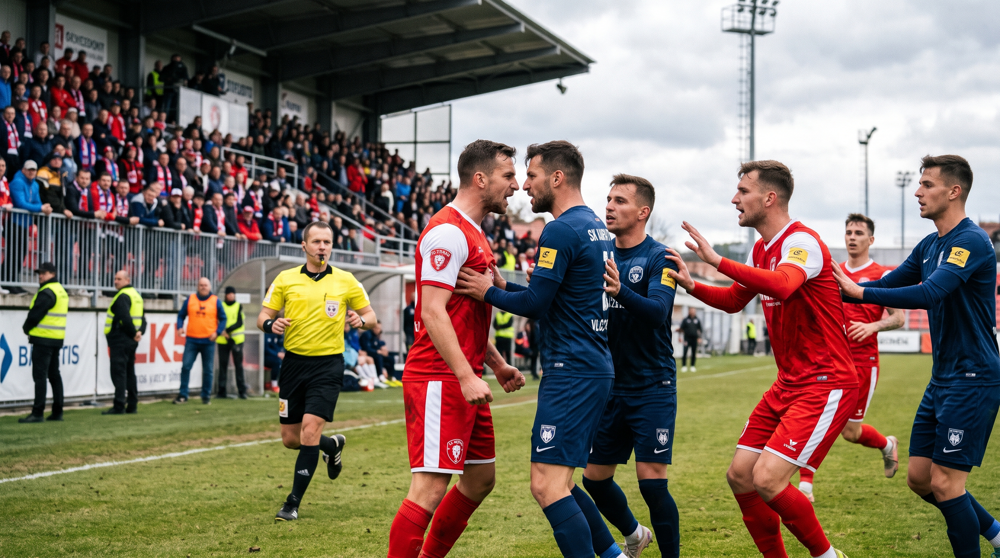

7
LiGA
Hľadaj hráča, klub alebo článok
Výsledky sa zobrazia počas písania.
HRÁČI
VÝSLEDKY
ČLÁNKY
PRIHLÁSIŤ SA
FOTOREPORTY
ČLÁNKY
AKO DOPADLO MIESTNE DERBY?

NOVÉ POSILY V LIGE
NAJLEPŠIE OBČERSTVENIE V NAŠEJ LIGE
PRED ZÁPASOM ROZHODUJE AJ DOBRÁ PRÍPRAVA
FANÚŠIKOVIA TVORIA ATMOSFÉRU NA IHRISKU